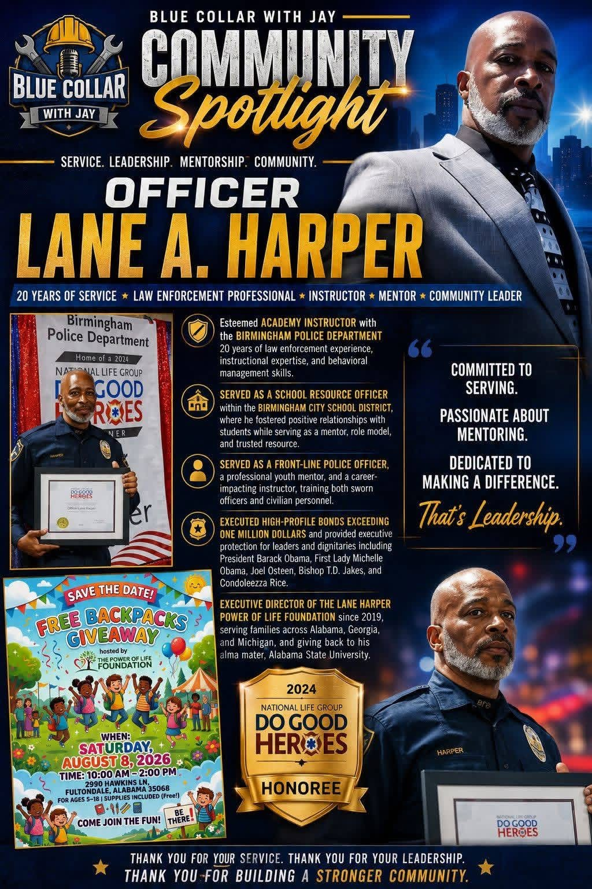

Officer Lane A. Harper
Serving beyond the badge through leadership, mentorship, and community impact.

20 years of service. A lifetime of impact.
Officer Lane A. Harper has dedicated more than two decades to public service, instruction, mentorship, youth development, and strengthening communities.
His work reflects the heart of the Community Builder recognition: service that reaches beyond a job title and creates lasting opportunity for others.
Law Enforcement Professional
Two decades of service with experience as a front-line officer, academy instructor, and school resource officer.
Instructor & Role Model
Training sworn officers and civilian personnel while building positive relationships with students and young people.
Power of Life Foundation
Leading outreach, youth support, backpack giveaways, and service initiatives through the Lane Harper Power of Life Foundation.
Leadership that serves.
Blue Collar With Jay proudly recognizes Officer Lane A. Harper for his commitment to serving, mentoring, teaching, and making a difference in the lives of others.
Committed to serving. Passionate about mentoring. Dedicated to making a difference.